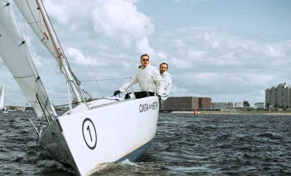

Opening of the Bigrace yachting school in Kaliningrad
The professional community of yachtsmen is celebrating the opening of the largest yachting school in Kaliningrad. Who teaches in it, what can you learn there and who is it designed for?Mikhail Chernov, a famous athlete and owner of Bigrace, told us about all this.
Is it necessary to remind you that Mikhail is the laureate of the Yakhtsman of the Century, the winner of the open championship of Spain in the ocean races, the holder of the Atlantic crossing record on the Class 20 yacht. Based on all the merits of the athlete, we can safely say that he is a real professionalyour business. The students of his school, both beginners and experienced yachtsmen, were definitely lucky. He will teach himself at the Mikhail school, as well as the best athletes of Russia and other countries: Spain, France, Montenegro, etc.
Michael set a goal to create not just a school, but something more:
“I wanted every school student to feel part of a large and strong team. These are not just words, we did a huge job so that it became possible: we carry out special events, trainings, meetings and much more. ”
Michael, tell us how your school differs from other yachting schools in Russia?
Firstly, this is the largest school in Kaliningrad and one of the largest in Russia. The school is equipped with the most modern and diverse equipment. And also, not only the most experienced yachtsmen of Russia, but also athletes from other countries will teach us. The school is designed not only for beginners, experienced yachtsmen will also find a lot of useful things here, they will be able to improve their qualifications.
How did the idea come to open your school?
Fans of sailing came to me, were interested in where you can continue training, train, find like -minded people. I could only advise a couple of schools, and then in Sochi or Moscow, in our city there was no such thing. We united with Nikolai Petrov, winner Sochi Race Week 2021, And they created their own school, which meets all the needs of beginners and professionals.
Please tell us more about teachers
I will be one of the teachers. Basically, I will conduct separate master classes for experienced sailors, but sometimes I will conduct classes in the initial groups. The leading teacher of the primary groups will be Nikita Gulyaev, a very experienced athlete, laureate of the Yaktsman of the Year 2021 Prize. Of the invited trainers, we have William Johnson, Ray Gilbert and Sam Lee. But, of course, we plan to invite other yachtsmen as often as possible.
Are you planning any regatta already this year?
Oh sure! On Tuesdays, we conduct a traditional general master class, on Wednesday the race among amateurs, we dedicate the match-race on Thursday. On Friday, we give a respite, and on Saturday we are waiting for novice yachtsmen for a combined lesson - the theory plus practice on the water. On Sundays, we will conduct Royal Sunday Race. The race starts at four in the afternoon so that people can relax, chat and recharge with energy for the rest of the week.
Set your goals, move towards them step by step, strive for knowledge. The most important thing is to constantly gain experience and knowledge. And be sure to believe in yourself!
advice to all yachting lovers from Collina Tracy
Do you have an example to follow in sports?
I really like the stories of ordinary people who were able to achieve success and recognition. Especially those who were not born in a sports or rich family did not have the opportunity to train at a high level in childhood, who created himself. Collin Tracy is my idol.My love for yachting began with him. Once, I even happened to see him personally. Then he gave me advice and I remembered his words for life. This is my motto, which now I pass on to my students.
Tell us about your school yachts
In our fleet, more than 40 modern yachts models, such as:
- Bavaria 47
- Bavaria 50
- Bavaria 46
- Bavaria 42
- Bavaria 40
- Jeanneau SO 35
- Jeanneau SO 36
It can be seen that you have prepared well! We wish you success and further development of your school!
Thank you! Come to our training and events. We will wait for all of you!